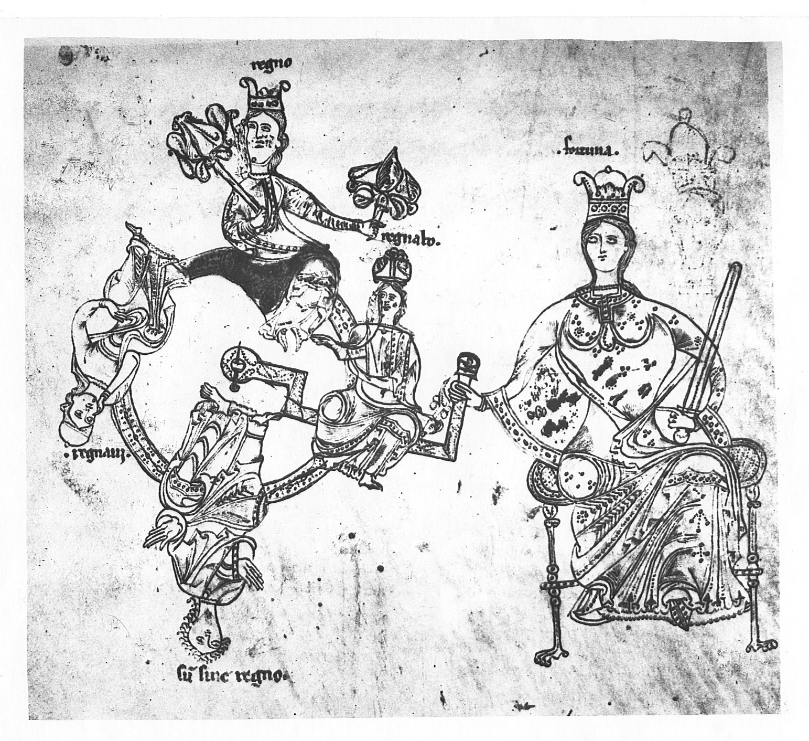

The wheel of fortune; Queen Fortuna turns the crank. Drawing, Spanish, late 9th
century. Manchester, John Ryland Library, ms. 83, fol. 214v. This may be the oldest
surviving depiction of the crank. The artist severely conceptualized it, because that's the way
what we call the real world looked to the medieval mind. Or maybe he had never seen or tried to
work one. But don't miss the bored look on Fortuna's face (enlargement). We know what she's
thinking, centuries before character study was invented in portraiture.
This is an exceptionally well-managed story. In his sermon on the evils of drink, leisure, and
complacency, the author sets these vices loose inside his cast of rollicking publicans, lighting
them gently from within by the glow of wine. They turn folly into discipline by stoutly obeying
the captain's orders, they sanctify their wild cruise by insisting on its stupendous cost, they
define gentility by wealth and capacity for drink, they blend piety with riot. Ignorant, vivid
scoundrels—breathes there a man who wouldn't heft a tankard with them?
Here begins the great tradition of folk satire that swelled into a flood in the late
Renaissance. On its crest sailed the masters—Erasmus, More, Rabelais,
Cervantes—while the depths gushed with swinish, sub-literary panegyrics to excess of
every sort. But this one fits nicely inbetween.
With more sophisticated anagogy than may at first appear, the characters on their
barstool voyage parody the holy pilgrimages undertaken so assiduously in the wake of the
Crusades. Filled with—um, spirit, they suddenly feel the peril the religious
voyager always risks, the enthousiásmos, the divine frenzy. In a travesty
of the Jonah myth, they deliver the obligatory sacrifice, but once back in port face the
wages of sin, now reckoned, of course, in hard cash.
Are we to take any of this seriously? Is this pure, vicious satire? Can the author,
who plainly had more than a smattering of theology, really want us to hear cries for
rekindling the crusading flame, a return to the dedication and idealism that drove
vast armies through appalling hardships across continents to avenge an injured
faith? Or is the yelling for another round of drunken fun all there is to it?
Just where we might look for an answer, in the summation, we find in place of a
fiery moral only—a man. The narrator begins his cadenza in canned style
("such is the power of wine . . ."), but soon, as his topic slides from
bibulosity to tightfistedness, his feelings get the better of him ("a lot of
penny-pinchers ought to drink a little more . . ."). Suddenly the cloak of
fiction falls, and there he stands, front and center: the minor poet, eternal
voice of the common man, abused, contentious, clawing for a hold on the tricky,
crowded ("God fling them off . . .") wheel of fortune.
The author calls himself "der Vröudenlaere" (roughly, "Joyless Joe"), from
which we may be sure he belonged to the class of propertyless, itinerant
minstrels. He knew his way, he lets on, through Vienna bordellos. According
to von der Hagen, the Count Hermann of
Devin that the poet mentions as his source, presumably his former master,
might have been a lord of Davena, an old fortification below Vienna, at the
confluence of the Danube and the March. Historical references indicate a
date late in the thirteenth century, when the Teutonic
Order's
campaigns were becoming topics for nostalgia, but probably before 1291, the
year in which Acre, a major Christian conquest in Syria here still claimed
by the wino crusade, fell irretrievably back into Arab control.
Only two manuscripts preserve the German version of this story, nor
could I find reference to any medieval analogues. But the fools'-voyage
metaphor is ancient and universal. There was a house of pleasure in
Agrigento, Sicily, called "the ship," according to Timaeos of Taormina,
a Greek historian of the fourth century b.C.e. Jason or Odysseus would
not have disdained to make a port call there. The ancestor of modern
works on this theme was Das Narrenschiff ("Ship of Fools"), the
first best-seller in the age of printing, put out in 1494 by Sebastian
Brant, an eclectic rimester and professor of law at the University of
Basel.
This is an exceptionally well-managed story. In his sermon on the evils of drink, leisure, and complacency, the author sets these vices loose inside his cast of rollicking publicans, lighting them gently from within by the glow of wine. They turn folly into discipline by stoutly obeying the captain's orders, they sanctify their wild cruise by insisting on its stupendous cost, they define gentility by wealth and capacity for drink, they blend piety with riot. Ignorant, vivid scoundrels—breathes there a man who wouldn't heft a tankard with them?
Here begins the great tradition of folk satire that swelled into a flood in the late Renaissance. On its crest sailed the masters—Erasmus, More, Rabelais, Cervantes—while the depths gushed with swinish, sub-literary panegyrics to excess of every sort. But this one fits nicely inbetween.
With more sophisticated anagogy than may at first appear, the characters on their barstool voyage parody the holy pilgrimages undertaken so assiduously in the wake of the Crusades. Filled with—um, spirit, they suddenly feel the peril the religious voyager always risks, the enthousiásmos, the divine frenzy. In a travesty of the Jonah myth, they deliver the obligatory sacrifice, but once back in port face the wages of sin, now reckoned, of course, in hard cash.
Are we to take any of this seriously? Is this pure, vicious satire? Can the author, who plainly had more than a smattering of theology, really want us to hear cries for rekindling the crusading flame, a return to the dedication and idealism that drove vast armies through appalling hardships across continents to avenge an injured faith? Or is the yelling for another round of drunken fun all there is to it?
Just where we might look for an answer, in the summation, we find in place of a fiery moral only—a man. The narrator begins his cadenza in canned style ("such is the power of wine . . ."), but soon, as his topic slides from bibulosity to tightfistedness, his feelings get the better of him ("a lot of penny-pinchers ought to drink a little more . . ."). Suddenly the cloak of fiction falls, and there he stands, front and center: the minor poet, eternal voice of the common man, abused, contentious, clawing for a hold on the tricky, crowded ("God fling them off . . .") wheel of fortune.
The author calls himself "der Vröudenlaere" (roughly, "Joyless Joe"), from which we may be sure he belonged to the class of propertyless, itinerant minstrels. He knew his way, he lets on, through Vienna bordellos. According to von der Hagen, the Count Hermann of Devin that the poet mentions as his source, presumably his former master, might have been a lord of Davena, an old fortification below Vienna, at the confluence of the Danube and the March. Historical references indicate a date late in the thirteenth century, when the Teutonic Order's campaigns were becoming topics for nostalgia, but probably before 1291, the year in which Acre, a major Christian conquest in Syria here still claimed by the wino crusade, fell irretrievably back into Arab control.
Only two manuscripts preserve the German version of this story, nor could I find reference to any medieval analogues. But the fools'-voyage metaphor is ancient and universal. There was a house of pleasure in Agrigento, Sicily, called "the ship," according to Timaeos of Taormina, a Greek historian of the fourth century b.C.e. Jason or Odysseus would not have disdained to make a port call there. The ancestor of modern works on this theme was Das Narrenschiff ("Ship of Fools"), the first best-seller in the age of printing, put out in 1494 by Sebastian Brant, an eclectic rimester and professor of law at the University of Basel.